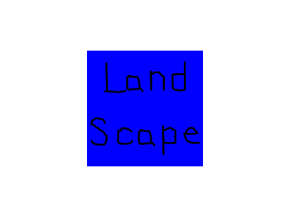

Extensions and Changing Orientation: Handling Orientation Changes

Last Updated 7/26/17
Now that we got SDL_image loading PNGs, it's time to handle when our mobile device rotates.//Screen dimensions
SDL_Rect gScreenRect = { 0, 0, 320, 240 };
//Scene textures
LTexture gPortraitTexture;
LTexture gLandscapeTexture;
For this application we'll be having a different textures render depending on whether the device is in portrait or landscape mode.
//Create window
gWindow = SDL_CreateWindow( "SDL Tutorial", SDL_WINDOWPOS_UNDEFINED, SDL_WINDOWPOS_UNDEFINED, gScreenRect.w, gScreenRect.h, SDL_WINDOW_SHOWN | SDL_WINDOW_RESIZABLE );
When you rotate your device, the height/width of the window changes which means the window size changes. In order to support rotation, the window needs to be created as resizable.
//Handle events on queue
while( SDL_PollEvent( &e ) != 0 )
{
//User requests quit
if( e.type == SDL_QUIT )
{
quit = true;
}
//Window event
else if( e.type == SDL_WINDOWEVENT )
{
//Window resize/orientation change
if( e.window.event == SDL_WINDOWEVENT_SIZE_CHANGED )
{
//Get screen dimensions
gScreenRect.w = e.window.data1;
gScreenRect.h = e.window.data2;
//Update screen
SDL_RenderPresent( gRenderer );
}
}
}
SDL2 turns orientation change events into window change events. We check for window events and if the window event is a size change, we get the new dimensions, and update the screen.
//Clear screen
SDL_SetRenderDrawColor( gRenderer, 0xFF, 0xFF, 0xFF, 0xFF );
SDL_RenderClear( gRenderer );
//Render splash
if( gScreenRect.h >= gScreenRect.w )
{
gPortraitTexture.render( ( gScreenRect.w - gPortraitTexture.getWidth() ) / 2, ( gScreenRect.h - gPortraitTexture.getHeight() ) / 2 );
}
else
{
gLandscapeTexture.render( ( gScreenRect.w - gLandscapeTexture.getWidth() ) / 2, ( gScreenRect.h - gLandscapeTexture.getHeight() ) / 2 );
}
//Update screen
SDL_RenderPresent( gRenderer );
How do we tell if the device is in portrait or landscape? Simple: if the height is greater width, it's in portrait. Otherwise, it's in landscape.